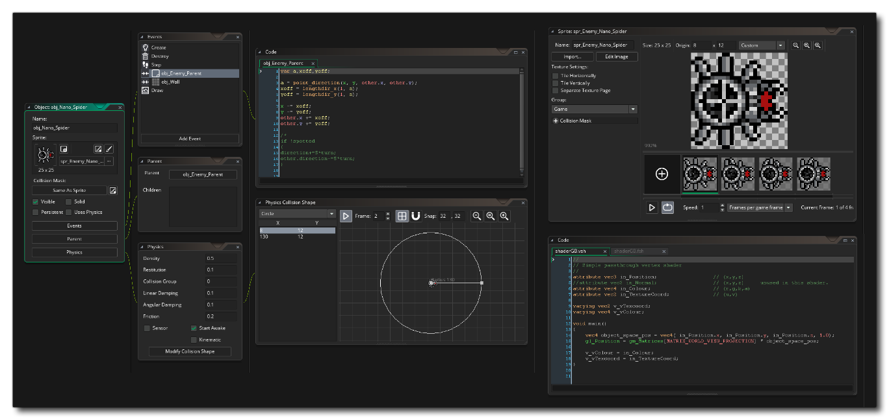

GameMaker Studio 2 est un outil conçu pour vous permettre, à vous et votre équipe, de créer des jeux nouveaux et innovants ainsi que des idées de prototypes de la manière la plus rapide et la plus intuitive possible sur plusieurs plates-formes cibles. Il est principalement conçu comme un outil pour créer des jeux 2D - bien que les jeux 3D soient parfaitement faisables - et est livré avec un certain nombre d'outils et d'éditeurs pour vous aider à réaliser vos rêves et vos idées. ressources de base.

Pour ceux qui sont nouveaux dans le monde de la programmation ou qui n'ont jamais utilisé d'outil de création de jeu, GameMaker Studio 2 offre une interface d'action et d'action intuitive et facile à utiliser (DnD™) qui vous permet de créer votre propre jeux très rapidement en utilisant des scripts visuels. Si vous êtes un programmeur plus expérimenté, vous pouvez utiliser le langage de script GML pour créer vos jeux, ou même combiner les deux et appeler les fonctions GML avec (et à partir de) les actions DnD™, ce qui vous donne une grande flexibilité quand vient à la façon dont vous écrivez des choses. Tout est présenté de manière intuitive, avec différents aspects de votre jeu « enchaînant » ensemble dans l'EDI pour vous donner une représentation unique et très visuelle du flux de travail.
Vous constaterez que l'EDI est également incroyablement flexible et qu'il peut être personnalisé en fonction de vos besoins - si l'installation par défaut de l'EDI ne couvre pas ce dont vous avez besoin - grâce à l'utilisation du système Plugin. Cependant, GameMaker Studio 2 dispose par défaut d'un certain nombre d'outils déjà puissants, comme un éditeur d'image complet pour créer vos propres sprites et mosaïques qui importeront également les images que vous avez créées dans n'importe quel éditeur externe, y compris les animations squelette et SWF. fichiers vectoriels de format. Une fois que vous avez vos images, il suffit de les affecter aux objets dans l' éditeur d'objets, d'ajouter du code ou des actions DnD™, puis de placer des instances de ces objets dans une salle de jeux dans l' éditeur de pièces. Il existe également des outils supplémentaires pour créer des chemins, des timelines, des shaders et bien plus encore.
Ce fichier d'aide vous dira tout ce que vous devez savoir sur GameMaker Studio 2 et comment vous pouvez créer vos propres jeux avec. Cependant, sachez que même avec un programme comme GameMaker Studio 2, la conception de jeux informatiques n'est pas complètement simple - donc pas de bouton "fais moi un MMORPG" ici! Sachez également que la création de jeux comporte de nombreux aspects et qu'ils sont tout aussi importants: jeux, graphismes, sons, interaction avec l'utilisateur, etc. Mais l'aspect le plus important est la patience. Bien que GameMaker Studio 2 soit un outil puissant, il ne peut pas tout faire pour vous en appuyant simplement sur un bouton. Commencez par des exemples simples et vous réaliserez que non seulement créer des jeux est amusant, mais apprendre à utiliser GameMaker Studio 2 c'est aussi très enrichissant!
Pour plus d'informations, des exemples, des tutoriels, des idées et des liens vers des forums utiles et d'autres sites intéressants, consultez le site Web de YoYo Games: